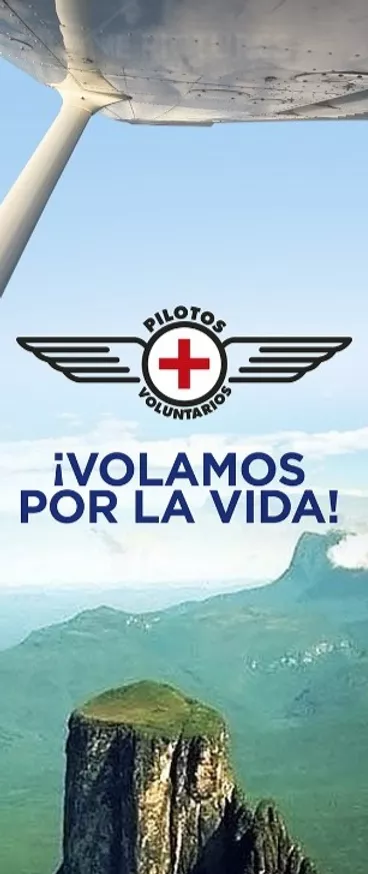

Se parte
de la
esperanza
Volamos por la vida
¡Haz tu primera donación o inscribete para formar parte!
¿Por qué hacerlo?
Sobre nosotros
La Fundación Pilotos Voluntarios como entidad sin fines de lucro, organiza misiones aéreas para la distribución y transporte de ayuda humanitaria. Leer más...
VISION
Volamos por ayudar
Creemos que nada debería impedir que las personas reciban ayuda y elementos esenciales para vivir, sin importar cuán remotos estos se encuentren. En muchos casos, debido a la extensa geografía venezolana, la única forma de llegar a personas necesitadas y aisladas es por medio de la aviación y la tecnología.
La necesidad
En un mundo como el de hoy, ironicamente existen muchas polaciones necesitadas y en aislamiento. Muchas comunidades remotas en Venezuela necesitan la asistencia del Gobierno y sociedad civil organizada.
Si una persona tiene una emergencia médica y el hospital más cercano no cuenta con los medicamentos, las distancias son muy largas y en mal estado, el pronóstico es malo.
Cuando los desastres naturales, los conflictos golpean lugares difíciles de alcanzar, un avión puede ser la única forma rápida y segura de movilizarse
¿Cómo ayudamos?
Muchas de estas personas estan alejadas de la ayudaLa Fundación Pilotos Voluntarios vuela aviones ligeros sobre selvas, montañas y sabanas. Permitimos que organizaciones de soporte y desarrollo, brinden atencion médica, ayuda de emergencia y desarrollo a largo plazo a cientos de comunidades en Venezuela. Nuestros aviones despegan y aterrizan en cualquier lugar de Venezuela para ayudar en un puente aéreo continuo y contribuir a la transformación del país. Habilitar misiones de ayuda es nuestro objetivo y usted puede ayudar a que sea posible.
Poblaciones aisladas
- Has un donativo de una hora de vuelo para llevar medicinas, tu ayuda es indispensable.
- Has un donativo de una hora de vuelo para la ambulancia aérea, las horas cuentan en estado critico.
- Has un donativo de una hora de vuelo para el traslado de médicos.